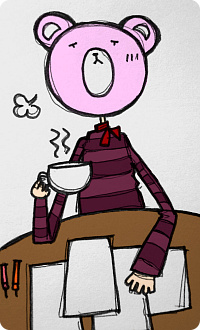
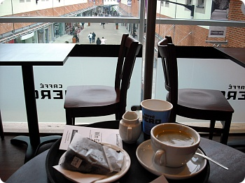
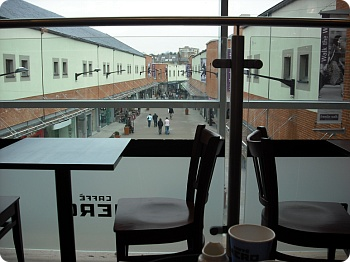
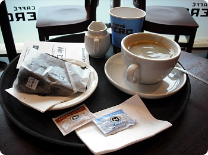
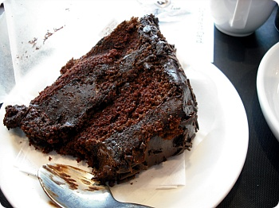
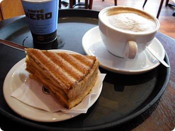
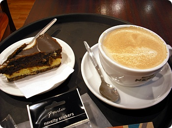
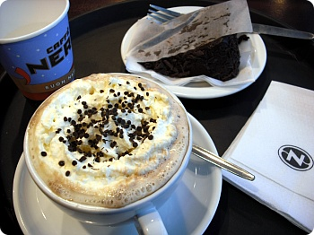
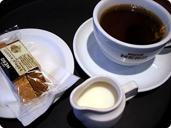
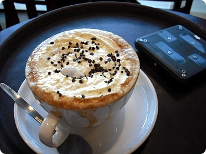

학교과제가 눈앞에 쌓일수록 엉뚱한곳에 불타오르는 창작의욕;;;;
내가 지금 이 분홍곰팅을 좋다고 색칠하면서 실실거릴때가 아닌데;;;;
원래 커피를 좋아하구 많이마시긴 하는데;;
요즘엔 내가생각해도 '어이쿳;;나 왜이러는겨;;'싶을정도로
카페인 중독;;;
커피숍에서 뭉기적거리면서 낙서하거나 멍때리는걸 좋아합니다^^
일주일에 1~2번이상 들리는것 같군요;;
내가 커피랑 케키값만 절약했어도 한재산........OTL
지금 사는 동네에 코스타 두군데
카페네로 두군데
스타벅스 하나
그외에도 이런저런 커피숍에 곳곳에 위치해있는데
가장 마음에 드는 자리는 HOUSE OF FRASER 2층에 위치한 카페네로^^
내가 지금 이 분홍곰팅을 좋다고 색칠하면서 실실거릴때가 아닌데;;;;
원래 커피를 좋아하구 많이마시긴 하는데;;
요즘엔 내가생각해도 '어이쿳;;나 왜이러는겨;;'싶을정도로
카페인 중독;;;
커피숍에서 뭉기적거리면서 낙서하거나 멍때리는걸 좋아합니다^^
일주일에 1~2번이상 들리는것 같군요;;
내가 커피랑 케키값만 절약했어도 한재산........OTL
지금 사는 동네에 코스타 두군데
카페네로 두군데
스타벅스 하나
그외에도 이런저런 커피숍에 곳곳에 위치해있는데
가장 마음에 드는 자리는 HOUSE OF FRASER 2층에 위치한 카페네로^^


요렇게 창가쪽에서 밖을 볼수있단 말이죠 훗훗훗포스팅한김에 커피랑 케키사진 방출

더블초코어쩌구....하는(이름을외울의지도 없고 외울능력도없는;;)쪼코케키랑아메리카노;;
드디어 대따대따 단 케키를 먹을때는 아메리카노를 주문하는 어른(?)이 되었다;;
옛날에 한번 녹차라떼랑 초코케키를 같이주문했다가 너무달아서
둘다 못먹고 패배했던 기억이;;;;

개인적으로는 초코케키 종류보다는치즈케키나 타르트를 더 좋아하는데
이나라는 케키종류중 만만해보이는게 초코케키 아님 티라미슈;;
꾸덕꾸덕한 치즈케키는 잘 보이지 않네요 ㅜㅜ 흑

요건 티라미슈랑 카페라떼
이것도 엄청 달았던 케키;;
다시 초코케키랑 카페모카
이건 홍차랑 비스코티
그리구 오늘 주문한 카페모카(흘러넘치건 말건 상관없이 손님에게 건내주는 대범함;;)랑 파니니를 기다리는중^^;;
여튼 몸속에서 자꾸 파니니랑 케키 그리고 커피를 내놔라!!! 라고 외치는것 같은 요즘입니다;;;